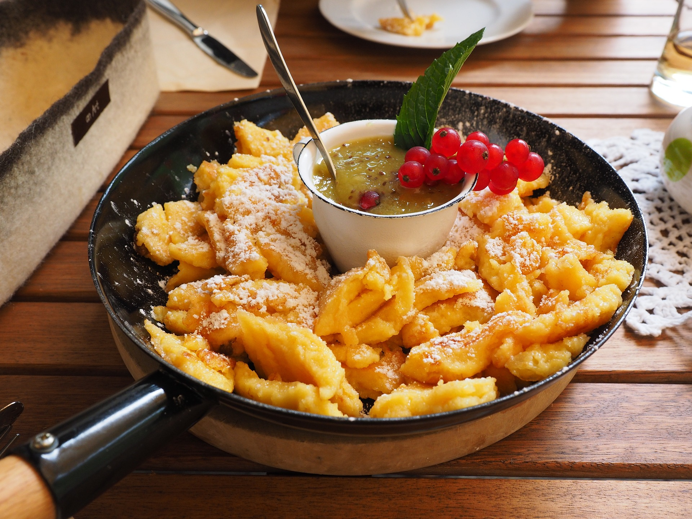

Kaiserschmarren
 20 Minuten
20 Minuten
 Simple
Simple
 19.05.2024
19.05.2024
Zutaten für
| 300 | g Mehl |
| 4 | Eier |
| 90 | g Zucker |
| 2 | Vanilleschoten |
| 50 | g Preiselbeeren |
| 80 | g Puderzucker |
| 300 | g Butter |
Zubereitung
Trenne die Eier. Gib das Eiweiß in eine große Schüssel und das Eigelb in eine separate Schüssel.
In die Schüssel mit dem Eigelb füge Milch, Mehl, Zucker und eine Prise Salz hinzu.
Mische alles gut, bis ein glatter Teig entsteht. Schlage das Eiweiß steif und hebe es vorsichtig unter den Teig. Optional kannst du jetzt auch die Rosinen unterheben. Erhitze etwas Butter oder Öl in einer großen Pfanne bei mittlerer Hitze. Gieße den Teig in die Pfanne und lasse ihn ein paar Minuten lang stocken, bis die Unterseite goldbraun ist. Zerreiße den Teig dann mit einem Pfannenwender oder Kochlöffel in kleine Stücke.
Wende die Stücke um und brate sie auf der anderen Seite, bis sie goldbraun und durchgegart sind.
Serviere den Kaiserschmarren heiß, bestreut mit Puderzucker und begleitet von Apfelmus oder Zwetschkenröster.
In die Schüssel mit dem Eigelb füge Milch, Mehl, Zucker und eine Prise Salz hinzu.
Mische alles gut, bis ein glatter Teig entsteht. Schlage das Eiweiß steif und hebe es vorsichtig unter den Teig. Optional kannst du jetzt auch die Rosinen unterheben. Erhitze etwas Butter oder Öl in einer großen Pfanne bei mittlerer Hitze. Gieße den Teig in die Pfanne und lasse ihn ein paar Minuten lang stocken, bis die Unterseite goldbraun ist. Zerreiße den Teig dann mit einem Pfannenwender oder Kochlöffel in kleine Stücke.
Wende die Stücke um und brate sie auf der anderen Seite, bis sie goldbraun und durchgegart sind.
Serviere den Kaiserschmarren heiß, bestreut mit Puderzucker und begleitet von Apfelmus oder Zwetschkenröster.
Rezept erstellt von
 Tobias
Tobias